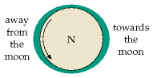
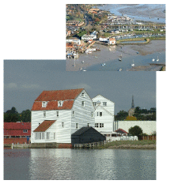
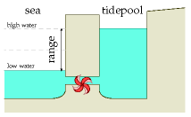
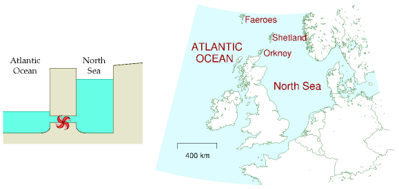
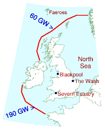
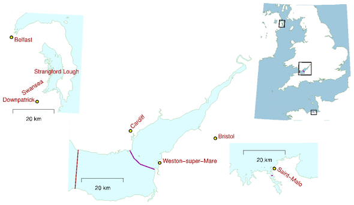
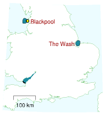
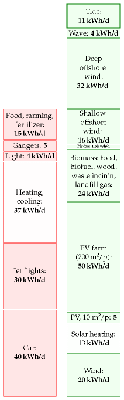

14 Tide
The moon and earth are in a whirling, pirouetting dance around the sun. Together they tour the sun once every year, at the same time whirling around each other once every 28 days. The moon also turns around once every 28 days so that she always shows the same face to her dancing partner, the earth. The prima donna earth doesn’t return the compliment; she pirouettes once every day. This dance is held together by the force of gravity: every bit of the earth, moon, and sun is pulled towards every other bit of earth, moon, and sun. The sum of all these forces is almost exactly what’s required to keep the whirling dance on course. But there are very slight imbalances between the gravitational forces and the forces required to maintain the dance. It is these imbalances that give rise to the tides.

Figure 14.1. An ocean covering a billiard-ball earth. We’re looking down on the North pole, and the moon is 60 cm off the page to the right. The earth spins once per day inside a rugby-ball-shaped shell of water. The oceans are stretched towards and away from the moon because the gravitational forces supplied by the moon don’t perfectly match the required centripetal force to keep the earth and moon whirling around their common centre of gravity. Someone standing on the equator (rotating as indicated by the arrow) will experience two high waters and two low waters per day.
The imbalances associated with the whirling of the moon and earth around each other are about three times as big as the imbalances associated with the earth’s slower dance around the sun, so the size of the tides varies with the phase of the moon, as the moon and sun pass in and out of alignment. At full moon and new moon (when the moon and sun are in line with each other) the imbalances reinforce each other, and the resulting big tides are called spring tides. (Spring tides are not “tides that occur at spring-time;” spring tides happen every two weeks like clockwork.) At the intervening half moons, the imbalances partly cancel and the tides are smaller; these smaller tides are called neap tides. Spring tides have roughly twice the amplitude of neap tides: the spring high tides are twice as high above mean sea level as neap high tides, the spring low tides are twice as low as neap low tides, and the tidal currents are twice as big at springs as at neaps.
Why are there two high tides and two low tides per day? Well, if the earth were a perfect sphere, a smooth billiard ball covered by oceans, the tidal effect of the earth-moon whirling would be to deform the water slightly towards and away from the moon, making the water slightly rugby-ball shaped (figure 14.1). Someone living on the equator of this billiard-ball earth, spinning round once per day within the water cocoon, would notice the water level going up and down twice per day: up once as he passed under the nose of the rugby-ball, and up a second time as he passed under its tail. This cartoon explanation is some way from reality. In reality, the earth is not smooth, and it is not uniformly covered by water (as you may have noticed). Two humps of water cannot whoosh round the earth once per day because the continents get in the way. The true behaviour of the tides is thus more complicated. In a large body of water such as the Atlantic Ocean, tidal crests and troughs form but, unable to whoosh round the earth, they do the next best thing: they whoosh around the perimeter of the Ocean. In the North Atlantic there are two crests and two troughs, all circling the Atlantic in an anticlockwise direction once a day. Here in Britain we don’t directly see these Atlantic crests and troughs – we are set back from the Atlantic proper, separated from it by a few hundred miles of paddling pool called the continental shelf. Each time one of the crests whooshes by in the Atlantic proper, it sends a crest up our paddling pool. Similarly each Atlantic trough sends a trough up the paddling pool. Consecutive crests and troughs are separated by six hours. Or to be more precise, by six and a quarter hours, since the time between moon-rises is about 25, not 24 hours.

Figure 14.2. Woodbridge tide-pool and tide-mill. Photos kindly provided by Ted Evans.

Figure 14.3. An artificial tide-pool. The pool was filled at high tide, and now it’s low tide. We let the water out through the electricity generator to turn the water’s potential energy into electricity. 1
The speed at which the crests and troughs travel varies with the depth of the paddling pool. The shallower the paddling pool gets, the slower the crests and troughs travel and the larger they get. Out in the ocean, the tides are just a foot or two in height. Arriving in European estuaries, the tidal range is often as big as four metres. In the northern hemisphere, the Coriolis force (a force, associated with the rotation of the earth, that acts only on moving objects) makes all tidal crests and troughs tend to hug the right-hand bank as they go. For example, the tides in the English channel are bigger on the French side. Similarly, the crests and troughs entering the North Sea around the Orkneys hug the British side, travelling down to the Thames Estuary then turning left at the Netherlands to pay their respects to Denmark.
Tidal energy is sometimes called lunar energy, since it’s mainly thanks to the moon that the water sloshes around so. Much of the tidal energy, however, is really coming from the rotational energy of the spinning earth. The earth is very gradually slowing down.
So, how can we put tidal energy to use, and how much power could we extract?
Rough estimates of tidal power
When you think of tidal power, you might think of an artificial pool next to the sea, with a water-wheel that is turned as the pool fills or empties (figures 14.2 and 14.3). Chapter G shows how to estimate the power available from such tide-pools. Assuming a range of 4 m, a typical range in many European estuaries, the maximum power of an artificial tide-pool that’s filled rapidly at high tide and emptied rapidly at low tide, generating power from both flow directions, is about 3 W/m2. This is the same as the power per unit area of an offshore wind farm. And we already know how big offshore wind farms need to be to make a difference. They need to be country-sized. So similarly, to make tide-pools capable of producing power comparable to Britain’s total consumption, we’d need the total area of the tide-pools to be similar to the area of Britain.
| tidal range | power density |
|---|---|
| 2 m | 1 W/m2 |
| 4 m | 3 W/m2 |
| 6 m | 7 W/m2 |
| 8 m | 13 W/m2 |
Table 14.4. Power density (power per unit area) of tide-pools, assuming generation from both the rising and the falling tide.
Amazingly, Britain is already supplied with a natural tide-pool of just the required dimensions. 2 This tide-pool is known as the North Sea (figure 14.5). If we simply insert generators in appropriate spots, significant power can be extracted. The generators might look like underwater wind

Figure 14.5. The British Isles are in a fortunate position: the North Sea forms a natural tide-pool, in and out of which great sloshes of water pour twice a day.
mills. Because the density of water is roughly 1000 times that of air, the power of water flow is 1000 times greater than the power of wind at the same speed. We’ll come back to tide farms in a moment, but first let’s discuss how much raw tidal energy rolls around Britain every day.
Raw incoming tidal power

Figure 14.6. The average incoming power of lunar tidal waves crossing these two lines has been measured to be 250 GW. This raw power, shared between 60 million people, is 100 kWh per day per person.
The tides around Britain are genuine tidal waves – unlike tsunamis, which are called “tidal waves,” but are nothing to do with tides. Follow a high tide as it rolls in from the Atlantic. The time of high tide becomes progressively later as we move east up the English channel from the Isles of Scilly to Portsmouth and on to Dover. The crest of the tidal wave progresses up the channel at about 70 km/h. (The crest of the wave moves much faster than the water itself, just as ordinary waves on the sea move faster than the water.) Similarly, a high tide moves clockwise round Scotland, rolling down the North Sea from Wick to Berwick and on to Hull at a speed of about 100 km/h. These two high tides converge on the Thames Estuary. By coincidence, the Scottish crest arrives about 12 hours later than the crest that came via Dover, so it arrives in near-synchrony with the next high tide via Dover, and London receives the normal two high tides per day.
The power we can extract from tides can never be more than the total power of these tidal waves from the Atlantic. The total power crossing the lines in figure 14.6 has been measured; on average it amounts to 100 kWh per day per person. 3 If we imagine extracting 10% of this incident energy, and if the conversion and transmission processes are 50% efficient, the average power delivered would be 5 kWh per day per person.
This is a tentative first guess, made without specifying any technical details. Now let’s estimate the power that could be delivered by three specific solutions: tide farms, barrages, and offshore tidal lagoons.
Tidal stream farms
One way to extract tidal energy would be to build tide farms, just like wind farms. The first such underwater windmill, or “tidal-stream” generator, to be connected to the grid was a “300 kW” turbine, installed in 2003 near the northerly city of Hammerfest, Norway. Detailed power production results have not been published, and no-one has yet built a tide farm with more than one turbine, so we’re going to have to rely on physics and guesswork to predict how much power tide farms could produce. Assuming that the rules for laying out a sensible tide farm are similar to those for wind farms, and that the efficiency of the tide turbines will be like that of the best wind turbines, table 14.7 shows the power of a tide farm for a few tidal currents.
| speed (m/s) | speed (knots) | power density (W/m2) |
|---|---|---|
| 0.5 | 1 | 1 |
| 1 | 2 | 8 |
| 2 | 4 | 60 |
| 3 | 6 | 200 |
| 4 | 8 | 500 |
| 5 | 10 | 1000 |
Table 14.7. Tide farm power density (in watts per square metre of sea-floor) as a function of flow speed. (1 knot = 1 nautical mile per hour = 0.514 m/s.)
Given that tidal currents of 2 to 3 knots are common, there are many places around the British Isles where the power per unit area of tide farm would be 6 W/m2 or more. This power per unit area can be compared to our estimates for wind farms (2–3 W/m2) and for photovoltaic solar farms (5–10 W/m2).
Tide power is not to be sneezed at! How would it add up, if we assume that there are no economic obstacles to the exploitation of tidal power at all the hot spots around the UK? Chapter G lists the flow speeds in the best areas around the UK, and estimates that 9 kWh/d per person could be extracted.
Barrages
Tidal barrages are a proven technology. The famous barrage at La Rance in France, 4 where the tidal range is a whopping 8 metres on average, has produced an average power of 60 MW since 1966. The tidal range in the Severn Estuary is also unusually large. At Cardiff the range is 11.3 m at spring tides, and 5.8 m at neaps. If a barrage were put across the mouth of the Severn Estuary (from Weston-super-Mare to Cardiff), it would make a 500 km2 tide-pool (figure 14.8). Notice how much bigger this pool is than the estuary at La Rance. What power could this tide-pool deliver, if we let the water in and out at the ideal times, generating on both the flood and the ebb? According to the theoretical numbers from table 14.4, when the range is 11.3 m, the average power contributed by the barrage (at 30 W/m2) would be at most 14.5 GW, or 5.8 kWh/d per person. When the range is 5.8 m, the average power contributed by the barrage (at 8 W/m2) would be at most 3.9 GW, or 1.6 kWh/d per person. These numbers assume that the water is let in in a single pulse at the peak of high tide, and let out in a single pulse at low tide. In practice, the in-flow and out-flow would be spread over a few hours, which would reduce the power delivered a little.

Figure 14.8. The Severn barrage proposals (bottom left), and Strangford Lough, Northern Ireland (top left), shown on the same scale as the barrage at La Rance (bottom right). The map shows two proposed locations for a Severn barrage. A barrage at Weston-super-Mare would deliver an average power of 2 GW (0.8 kWh/d per person). The outer alternative would deliver twice as much. There is a big tidal resource in Northern Ireland at Strangford Lough. Strangford Lough’s area is 150 km2; the tidal range in the Irish Sea outside is 4.5 m at springs and 1.5 m at neaps – sadly not as big as the range at La Rance or the Severn. The raw power of the natural tide-pool at Strangford Lough is roughly 150 MW, which, shared between the 1.7 million people of Northern Ireland, comes to 2 kWh/d per person. Strangford Lough is the location of the first grid-connected tidal stream generator in the UK.
The current proposals for the barrage will generate power in one direction only. This reduces the power delivered by another 50%. The engineers’ reports on the proposed Severn barrage 5 say that, generating on the ebb alone, it would contribute 0.8 kWh/d per person on average. The barrage would also provide protection from flooding valued at about £120M per year.
Tidal lagoons

Figure 14.9. Two tidal lagoons, each with an area of 400 km2, one off Blackpool, and one in the Wash. The Severn estuary is also highlighted for comparison.
Tidal lagoons are created by building walls in the sea; they can then be used like artificial estuaries. The required conditions for building lagoons are that the water must be shallow and the tidal range must be large. Economies of scale apply: big tidal lagoons make cheaper electricity than small ones. The two main locations for large tidal lagoons in Britain are the Wash on the east coast, and the waters off Blackpool on the west coast (figure 14.9). Smaller facilities could be built in north Wales, Lincolnshire, southwest Wales, and east Sussex.
If two lagoons are built in one location, a neat trick can be used to boost the power delivered and to enable the lagoons to deliver power on demand at any time, independent of the state of the tide. One lagoon can be designated the “high” lagoon, and the other the “low” lagoon. At low tide, some power generated by the emptying high lagoon can be used to pump water out of the low lagoon, making its level even lower than low water. The energy required to pump down the level of the low lagoon is then repaid with interest at high tide, when power is generated by letting water into the low lagoon. Similarly, extra water can be pumped into the high lagoon at high tide, using energy generated by the low lagoon. Whatever state the tide is in, one lagoon or the other would be able to generate power. Such a pair of tidal lagoons could also work as a pumped storage facility, storing excess energy from the electricity grid.
The average power per unit area of tidal lagoons in British waters could be 4.5 W/m2, 6 so if tidal lagoons with a total area of 800 km2 were created (as indicated in figure 14.9), the power generated would be 1.5 kWh/d per person.
Beauties of tide
Totting everything up, the barrage, the lagoons, and the tidal stream farms could deliver something like 11 kWh/d per person (figure 14.10).
Tide power has never been used on an industrial scale in Britain, so it’s hard to know what economic and technical challenges will be raised as we build and maintain tide-turbines – corrosion, silt accumulation, entanglement with flotsam? But here are seven reasons for being excited about tidal power in the British Isles. 1. Tidal power is completely predictable; unlike wind and sun, tidal power is a renewable on which one could depend; it works day and night all year round; using tidal lagoons, energy can be stored so that power can be delivered on demand. 2. Successive high and low tides take about 12 hours to progress around the British Isles, so the strongest currents off Anglesey, Islay, Orkney and Dover occur at different times from each other; thus, together, a collection of tide farms could produce a more constant contribution to the electrical grid than one tide farm, albeit a contribution that wanders up and down with the phase of the moon. 3. Tidal power will last for millions of years. 4. It doesn’t require high-cost hardware, in contrast to solar photovoltaic power. 5. Moreover, because the power density of a typical tidal flow is greater than the power density of a typical wind, a 1 MW tide turbine is smaller in size than a 1 MW wind turbine; perhaps tide turbines could therefore be cheaper than wind turbines. 6. Life below the waves is peaceful; there is no such thing as a freak tidal storm; so, unlike wind turbines, which require costly engineering to withstand rare windstorms, underwater tide turbines will not require big safety factors in their design. 7. Humans mostly live on the land, and they can’t see under the sea, so objections to the visual impact of tide turbines should be less strong than the objections to wind turbines.
What got built
A section added in the 2026 revision. This chapter totals 11 kWh/d per person from tide: 9 from tidal stream farms, 1.5 from lagoons, 0.8 from a Severn barrage. Eighteen years on, the three parts have had very different fates, and none of them is the fate MacKay’s arithmetic anticipated.
The barrage and the lagoons: nothing
The Severn barrage was rejected in the late 1980s, again in 2003, and scrapped by the government in 2010 on grounds of cost and environmental risk. It has been revived and set aside repeatedly since. In March 2025 the Severn Estuary Commission concluded that tidal range energy in the estuary is feasible — a finding, not a commitment, and no scheme has been authorised.
The Swansea Bay tidal lagoon was rejected on 25 June 2018, the government judging the £1.3 billion scheme poor value for money despite the Welsh government offering £200 million towards it. The proposal was finally sunk in December 2022 when the developer lost its planning appeal.
MacKay’s 0.8 plus 1.5 kWh/d per person from barrages and lagoons has therefore delivered exactly nothing, and the reason in both cases was cost, not physics.
Tidal stream: real, and very small
Tidal stream is the part that exists. MeyGen in the Pentland Firth became the world’s first tidal array to generate 50 GWh in February 2023, and had passed 84 GWh cumulatively by 2025. In Allocation Round 6, six tidal stream projects across five sites contracted 28 MW at £172/MWh — the lowest price since tidal was given its own budget, and the third consecutive auction in which it has needed one.7
Against this chapter’s 9 kWh/d per person from tidal stream, what Britain actually gets is of the order of 0.004 kWh/d — smaller by a factor of about two thousand.
The seven beauties, marked
MacKay ends the chapter with seven reasons to be excited about tide. Four have held, and two were wrong in a way that is worth being precise about.
Beauty 1, predictability: right, and worth more than he knew. Tidal power is forecastable years ahead. When this chapter was written that was a nice property; chapters 26 and 28a show that in a system dominated by wind and solar the binding constraint is not energy but timing, and a resource whose output is known in advance is exactly what a cannibalised market should pay a premium for. This is the argument for tide that has strengthened since 2008, and it is not the argument MacKay leaned on.
Beauty 4, that tide “doesn’t require high-cost hardware, in contrast to solar photovoltaic”: exactly backwards. Utility-scale solar now costs around £34/MWh worldwide. Tidal stream contracted at £172/MWh. He identified the two technologies correctly and put them the wrong way round, by a factor of five.
Beauty 5, that a tide turbine might be cheaper than a wind turbine: offshore wind cleared AR6 at about £82/MWh in today’s money. Tidal stream cleared the same auction at more than double that.
Beauty 6, that “there is no such thing as a freak tidal storm”, so tide turbines “will not require big safety factors”: the premise is true and the conclusion did not follow. There are no storms below the waves, but chapter 12 shows what the sea does to machinery regardless, and tidal stream has survived only because three consecutive auctions reserved it a budget it could not have won in open competition.
That ring-fence is the single fact that summarises this chapter. Tidal stream is not competing with wind and solar; it is being protected from them.
Why it may still matter
None of this says the resource is not there. The tides are as predictable and as large as MacKay says, the power densities in table 14.7 are sound, and the Severn Estuary Commission’s 2025 finding that tidal range is feasible is a finding about engineering.
What has changed is which of tide’s properties is valuable. In 2008 the case was made on quantity: 11 kWh/d per person, a serious slice of the green stack. In 2026 the case, if there is one, is made on timing — a predictable, dispatchable-by-the-almanac resource in a system that is running short of exactly that, and whose capture price should therefore hold up where wind’s and solar’s fall.
Whether that is worth £172/MWh is a different question, and one this book cannot answer with physics. But it is the right question, and it is not the one this chapter asks.
Mythconceptions
Tidal power, while clean and green, should not be called renewable. Extracting power from the tides slows down the earth’s rotation. We definitely can’t use tidal power long-term.
False. The natural tides already slow down the earth’s rotation. The natural rotational energy loss is roughly 3 TW (Shepherd, 2003). Thanks to natural tidal friction, each century, the day gets longer by 2.3 milliseconds. Many tidal energy extraction systems are just extracting energy that would have been lost anyway in friction. But even if we doubled the power extracted from the earth–moon system, tidal energy would still last more than a billion years.

Figure 14.10. Tide.
Notes and further reading
The power of an artificial tide-pool. The power per unit area of a tide-pool is derived in Chapter G.↩︎
Britain is already supplied with a natural tide-pool . . . known as the North Sea. I should not give the impression that the North Sea fills and empties just like a tide-pool on the English coast. The flows in the North Sea are more complex because the time taken for a bump in water level to propagate across the Sea is similar to the time between tides. Nevertheless, there are whopping tidal currents in and out of the North Sea, and within it too.↩︎
The total incoming power of lunar tidal waves crossing these lines has been measured to be 100 kWh per day per person. Source: Cartwright et al. (1980). For readers who like back-of-envelope models, Chapter G shows how to estimate this power from first principles.↩︎
La Rance generated 16 TWh over 30 years. That’s an average power of 60 MW. (Its peak power is 240 MW.) The tidal range is up to 13.5 m; the impounded area is 22 km2; the barrage 750 m long. Average power density: 2.7 W/m2. Source: [6xrm5q].↩︎
The engineers’ reports on the Severn barrage…say 17 TWh/year. (Taylor, 2002b). This (2 GW) corresponds to 5% of current UK total electricity consumption, on average.↩︎
Power per unit area of tidal lagoons could be 4.5 W/m2. MacKay (2007a).↩︎
MeyGen generation — first tidal array worldwide to pass 50 GWh in February 2023 and over 84 GWh cumulatively by 2025 — from the project’s own and Low Carbon Contracts Company reporting. Allocation Round 6 contracted six tidal stream projects across five sites totalling 28 MW at £172/MWh; that price is in 2012 money as CfD strike prices are, so the cash figure is higher, and it is the lowest tidal stream price since the technology was given a ring-fenced budget in AR4. The comparison figures are utility-scale solar at roughly £34/MWh from IRENA’s global weighted average and offshore wind at about £82/MWh indexed from AR6, discussed in chapters 6 and 4 respectively; strike prices and levelised costs are not the same measure, as chapter 28a explains, so these comparisons are indicative of the gap rather than exact. The 0.004 kWh/d per person figure assumes the full 28 MW contracted at a 40% capacity factor across 68.4 million people, which flatters the present position considerably since most of that capacity is not yet built. Severn barrage and Swansea Bay dates and decisions are from contemporaneous government announcements and reporting; the Severn Estuary Commission reported in March 2025.↩︎